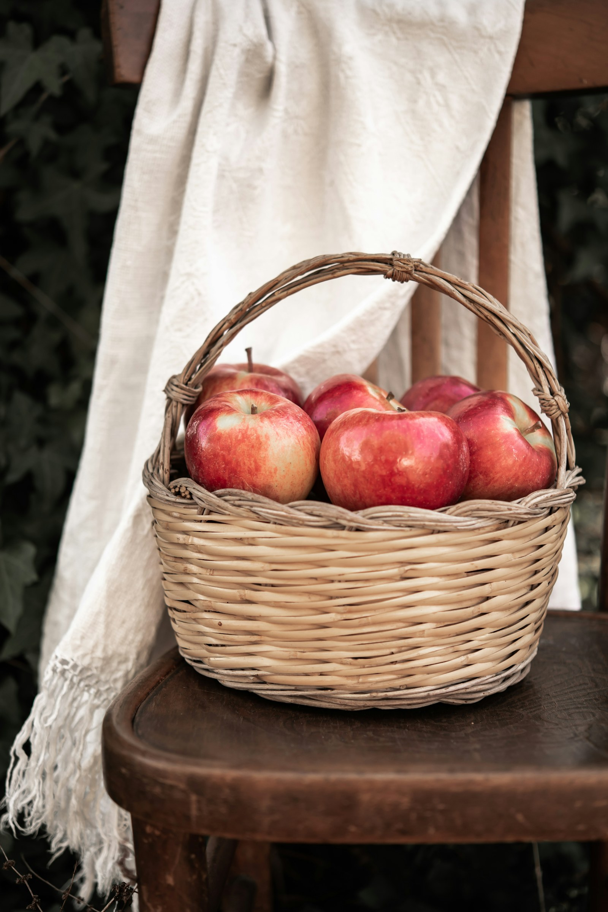

Califon, New Jersey · Est. 1987
Baskets, woven by hand in New Jersey.
White oak, willow, and seagrass, shaped in our barn and finished with a name and a date on the base. Every basket is made after you order it.
Most baskets are ready in one to two weeks. Pickup in Califon is free.

The collection
On the bench this week.
Also this season
Materials
Three things, and that’s enough.
-
01
White oak
Riven, not sawn, so the grain stays intact and the basket flexes instead of cracking. We buy splits from South Jersey and from Pennsylvania when the local oak runs out.
-
02
Willow
Peeled rods for the lighter baskets, from the Delaware watershed when the season allows. Softer in the hand, quicker on the bench, still a real basket.
-
03
Seagrass
Wrapped on the rim. Kinder on the hands than a bare lashing, and it holds the handle where we set it.
On the bench
Four days, one basket.
-
Day one
Rive and soak
Split the oak along the grain. Soak the weavers until they bend without sulking.
-
Day two
Build the base
The part you never see. If the base is wrong, the basket rocks, and we start over.
-
Day three
Weave the walls
Tight for a market. Open for bread. Twill where a lid has to sit straight.
-
Day four
Rim, oil, name
A carved oak rim, a thin coat of oil, and initials with the date on the base.
The basket should outlast the job you bought it for.”
The barn
Open Thursday through Sunday.
The door is blue. Knock if you’re picking up on a weaving day. Otherwise come in, look at what’s finished, and tell us what you actually carry.
Hours
- Thu–Sat
- 10–5
- Sunday
- 11–3
- Mon–Wed
- Weaving days
The Basket Barn
19 Splint Lane
Califon, NJ 07830